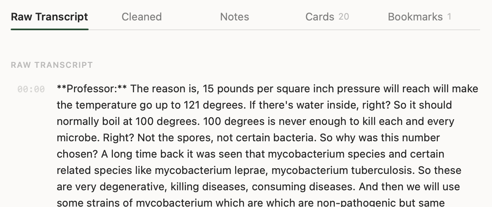
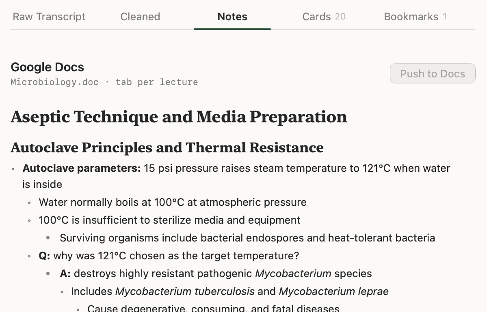
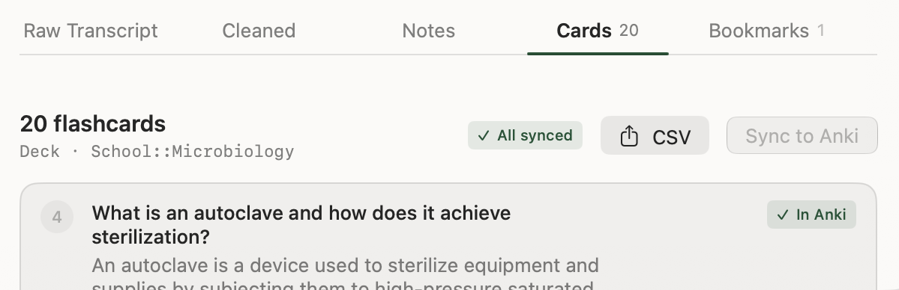
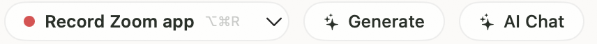
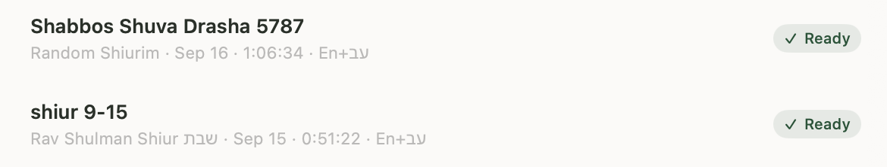
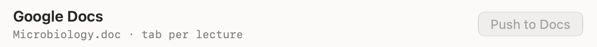
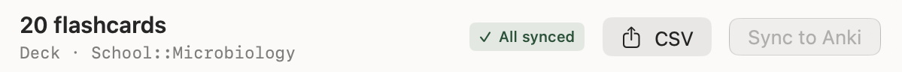

01 / 07 · Before class
See the day ahead
Your first class starts in a few minutes. Your schedule, readings, and deadlines are already here.
Lectern for Mac
Keep your attention in class. Lectern keeps the lecture.
Download for macOSMac app demo, adapted for this screen.
01 / 07 · Before class
Your first class starts in a few minutes. Your schedule, readings, and deadlines are already here.
How it works
A morning class, start to finish. Scroll and the laptop follows each step.
01 / 07 · Before class
Your first class starts in a few minutes. Your schedule, readings, and deadlines are already here.
02 / 07 · Record
The professor starts talking. Start a sample recording and stay with the discussion.
03 / 07 · Review
You remember the idea, but not the exact words. Find them in the transcript.
04 / 07 · Notes
Class is over. Turn the discussion into an outline you can come back to, in English or Hebrew.
05 / 07 · Cards
Tomorrow, try to recall it before you look. Reveal an answer, then move to the next card.
06 / 07 · Quiz
Did it stick? Answer a few questions and see why each answer is right.
07 / 07 · Return
The lecture stays in your library. Preview a Google Docs export, or download the sample cards.
Pre Lab 9/2 is a 32-minute microbiology lab, recorded in Lectern. Follow one idea from the room to the flashcards.

See the whole window
See the whole window
See the whole windowA 32-second film of the real app, with no sound. Pick a lecture, choose what to make, read the notes, edit the cards.
Written up the way Lectern writes up a lecture.




Free and open source. For Apple silicon Macs on macOS 26 or later.
First time? Follow the installation guide.